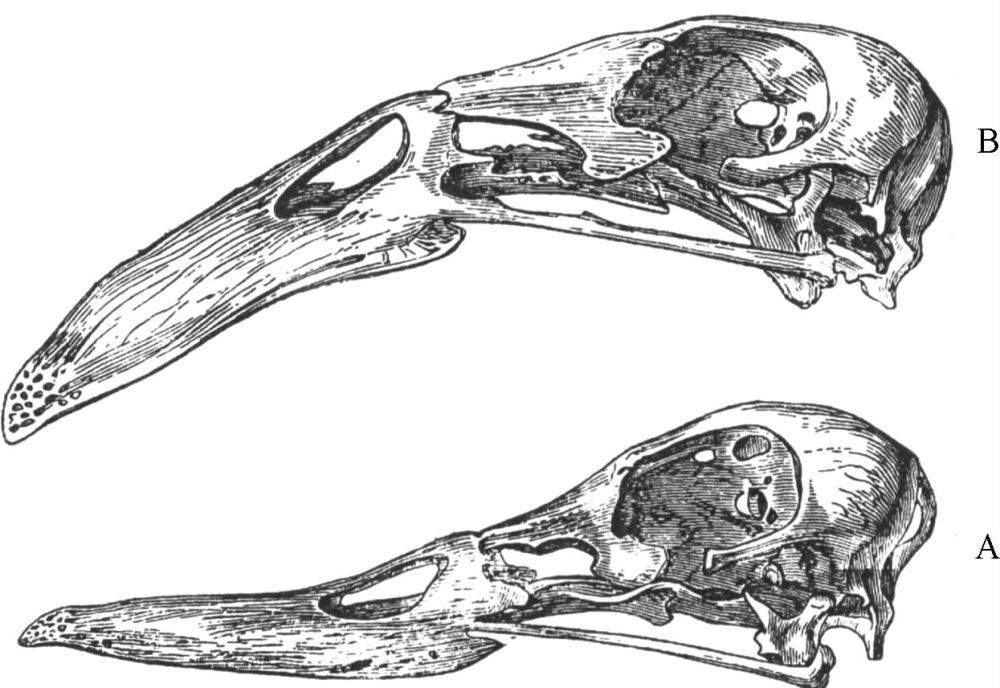
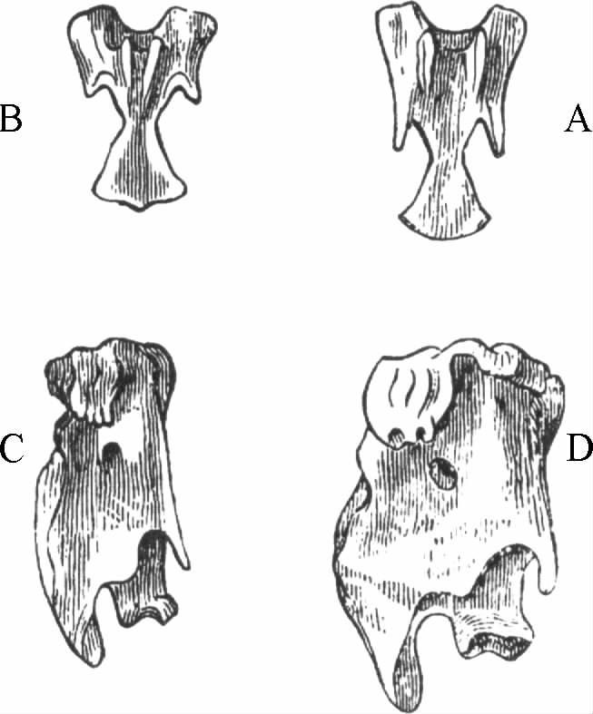
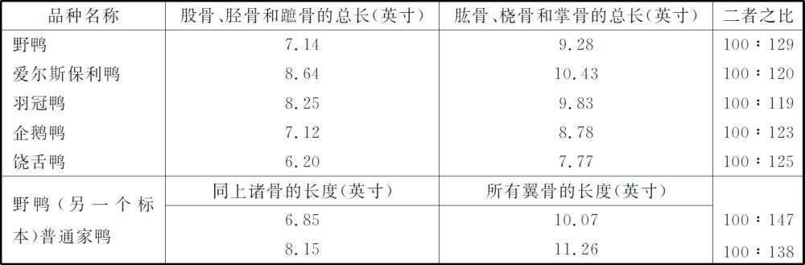
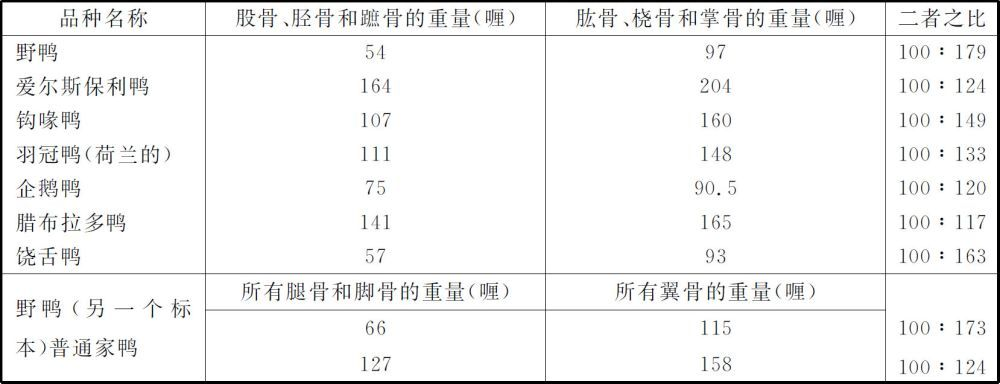
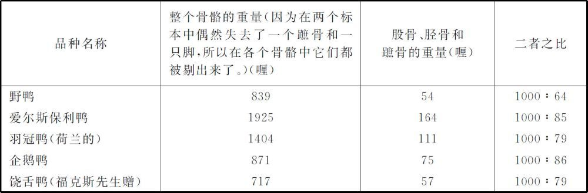
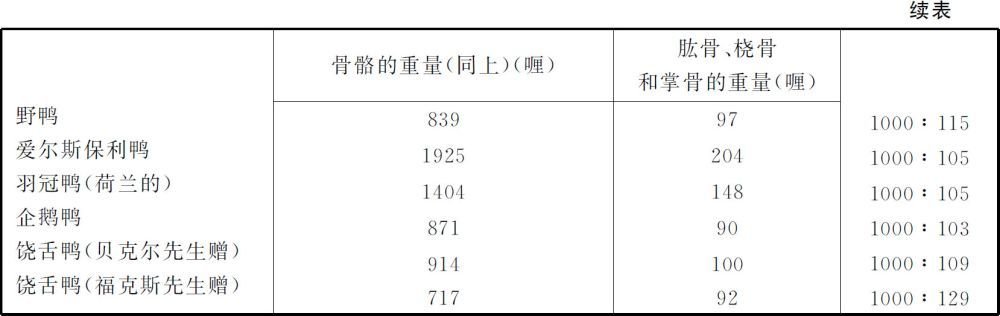
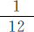

鸭
我将同以前一样地先对鸭的主要品种加以概略的描述。
品种1，普通家鸭（Common Domestic Duck） 在颜色和体部的比例方面有很大变异，并且在本能和禀性方面同野鸭有差异。有几个亚品种如下：（1）爱尔斯保利鸭（Aylesbury），大型，白色，喙和腿呈浅黄色；腹部的皮囊非常发达。（2）卢昂鸭（Rouen），大型，颜色同野鸭的相似，喙呈绿色或有斑点；皮囊非常发达。（3）羽冠鸭（Tufted Duck），具有一个由绒羽形成的大型顶羽簇，支持它的是一个肉质块，在它下面的头骨有孔。我从荷兰引进过一只这种鸭子，它的顶羽簇的直径为两英寸半。（4）腊布拉多鸭（Labrador），又名加拿大鸭（Canadian）、或布宜诺斯艾利斯鸭（Buenos Ayres）、或东印度群岛鸭（East Indian）；羽衣完全是黑色的；喙的宽度同长度相比，比野鸭的宽；卵稍呈黑色。这个亚品种恐怕应当被分类为一个品种；它包括两个亚变种，一同普通家鸭一样大，我养过这种鸭，一比普通家鸭小而且往往有飞翔的能力[1]。我推测在法国[2]被描述为善飞的、相当野的并且在烹调后具有野鸭风味的大概就是后面这个亚变种；尽管如此，这个亚变种还是一夫多妻的，所以同其他家鸭相似，而同野鸭不同。这种黑色的腊布拉多鸭可以纯粹地繁育；不过特尔拉勒（Turral）博士关于法国产的这个亚变种举出过一个例子：它产生出来的雏鸭在头和颈上生有一些白色羽毛，并且在胸部生有一个赭色斑块。
品种2，钩喙鸭（Hook-billed Duck） 这种鸭由于喙向下钩曲，所以呈现一种异常的外观。头上往往生有羽簇。普通是白色的，不过有些同野鸭的颜色相似。这是一个古老的品种，1676年已经受到人们的注意了[3]。它像终年产卵的鸡那样，几乎不间断地产卵，这阐明了它的长期家养过程[4]。
品种3，饶舌鸭（Call Duck） 由于它的体小以及雌鸭的非常善于饶舌而著名。喙短，这种鸭如果不是白色的，就同野鸭的颜色相似。
品种4，企鹅鸭（Penguin Duck） 在所有品种中它是最惹人注意的，这种鸭似乎起源于马来群岛。它走起路来身体笔直，细颈向上直伸。喙稍短。尾向上卷，只具有十八支尾羽。股骨和蹠骨长。
几乎所有博物学者都承认这几个鸭品种都是从普通野鸭（Anas boschas）传下来的；另一方面，大多数的养鸭者却照例持有不同的见解[5]。除非我们认为持续若干世纪的家养不能够影响甚至像颜色、大小那样不重要性状并且也不能够轻微地影响身体大小的比例以及性情，我们就没有任何理由来怀疑家鸭是从普通野生种传下来的，因为它们彼此之间在重要性状上并没有什么差异。关于鸭的家养时期及其进程，我们掌握有若干历史的证据。古埃及人、《旧约》时代的犹太人以及荷马时代的希腊人都不知道有鸭[6]。约在1800年以前，哥留美拉[7]和瓦罗（Varro）谈到养鸭必须像养其他野生鸟那样地把它们放在网围中，所以在这个时期是有飞跑之危险的。再者哥留美拉向那些希图增殖鸭群的人们提出过一项计划，建议他们搜集野鸭的卵，叫母鸡来孵抱，正如狄克逊先生所说的，这个计划阐明了“这时的鸭在罗马人的养鸡场中还没有变成归化的和多产的同住者”。像阿尔祝万狄在很久以前所说的那样，几乎在每一种欧洲文字中二者的名字都是一样的，从此也可以看出家鸭是起源于野鸭的。野鸭有广泛的分布范围，从喜马拉雅到北美都有它的踪迹。野鸭可以容易地同家鸭杂交，而且它们的杂种后代是完全能育的。
不论在北美或在欧洲，野鸭被发现是容易驯养和繁殖的。提布尔求斯（Tiburtius）在瑞典仔细地进行过这种试验；他成功地把野鸭养育了三代，虽然他处理它们同处理家鸭一样，但它们甚至连一根羽毛都没有发生变异。野鸭产生出来的雏鸭如果在冷水中游泳就会得病[8]，虽然这是一个奇怪的事实，但我们知道普通家鸭产生出来的雏鸭确系如此。一位精确的和著名的英国观察者[9]曾经详细地记载了他在饲养野鸭方面常常反复从事的成功试验。叫班塔姆鸡来孵它们的卵，雏鸭就会容易地孵化出来；但是要想成功，千万不可把野鸭的卵和家鸭的卵同时叫一只母鸡来孵抱，因为在这种情形下，“野鸭的雏就会死去，留下它们的比较健壮的同胞不受干扰地来享受养母的照顾。由于新孵化出来的雏鸭具有不同的习性，几乎一开始就会肯定地造成这种结果”。野小鸭对于照顾它们的那些人从一开始就是驯顺的，只要他们穿着同样的服装；同时对于那家的狗和猫也是一样。它们甚至用喙去啄狗，从它们所垂涎的任何地点把狗赶走。但是看到生人和生狗，它们却会大起惊慌。在瑞典发生的情形有所不同，赫维特先生发现他的雏鸭经过两三个世代总要在性状上发生变化和退化；尽管非常小心地防止它们同家鸭杂交，也是如此。三代以后，他的野鸭便失去了野生种那样的堂堂步伐，并且开始取得普通鸭的步态。每一代它们的大小都有所增加，而腿的美丽都有所减少。野鸭所具有的白色颈环变得较宽而且较不规则，同时一些较长的初级飞羽或多或少地变成白色了。当这种情形发生以后，赫维特先生就把他的整个鸭群几乎全都杀掉，并且从野鸭的巢中采集新卵；所以他从来没有能够把同一族的野鸭繁育到五六代以上。他的鸭永远是一夫一妻的，从来不会像普通家鸭那样地保持一夫多妻的关系。我之所以叙述这些细节，是因为据我所知，关于野鸭在家养状况下被培育几代之后所发生的变化过程，由有能力的观察者如此仔细记载下来的，还没有其他例子。
从这些考察可以知道，野鸭几乎无可怀疑地是普通家养种类的祖先；并且关于比较不同的品种——即企鹅鸭、饶舌鸭、钩喙鸭、羽冠鸭和腊布拉多鸭——的血统，我们也不必向其他物种去寻求。我不拟在此重复前一章所使用的一些论点：例如，论述人类在古代曾经家养过若干物种，其后不可能便不为人所知道或灭绝了，虽然鸭在野生状态下是不容易灭绝的——论述在假想的原种中有一些同鸭属的其他所有物种相比较，就像同钩喙鸭、企鹅鸭相比较时那样，具有异常的性状——就所能知道的来说，论述所有品种都是杂交能育的[10]——论述所有品种都具有相同的一般禀性、本能等。但是有一个同这个问题有关系的事实却值得注意：在种类繁多的鸭科中，只有一个物种即雄野鸭（A．boschas）具有四支向上卷曲的中央尾羽；上面所说的每一个家养品种现在都具有这样的卷曲尾羽，如果我们假定它们是从不同的物种传下来的，那么就必须假设人们在以前所得到的那些物种都具有现在那样独特的性状。再者，各个品种的亚变种的颜色同野鸭的几乎完全一样，我看到的最大型品种和最小型品种，如卢昴鸭和饶舌鸭就是这样，并且勃连特先生说[11]，钩喙鸭也系如此。这位先生告诉我说，他曾使一只白色的雄爱尔斯保利鸭同一只黑色的雌腊布拉多鸭进行杂交，当雏鸭长大了的时候，其中有一些取得了野鸭羽衣的颜色。
关于企鹅鸭我没有看见过许多标本，并且其中没有一只的颜色精确地同野鸭的相似；不过詹姆斯·勃鲁克爵士从马来群岛中的琅波克和巴里给我送来过三张鸭皮，其中两只雌鸭比野鸭的颜色较浅并且较红，而雄鸭则不同，它的整个上面和下面（除了颈、尾部复羽、尾和翅膀）都是银灰色的，并且具有暗色细条纹，而同野鸭羽衣的某些部分密切相似。但是我发现这只雄鸭在每一根羽毛上都同一个普通品种的变异个体完全一样，这个个体是从肯特的农庄里得到的，并且我偶尔在其他地方也看到过同样的标本。在像没有野生种的马来群岛那样特殊气候下繁殖的一只雄鸭竟同偶尔在我们农庄里出现的鸭的羽衣完全一样，这真是一个值得注意的事实。尽管如此，马来群岛的气候显然有使鸭发生巨大变异的倾向，因为当佐林格[12]谈到企鹅鸭的时候说道，在琅波克“有一个异常的和令人惊奇的鸭的变种”。我饲养的一只雄企鹅鸭同从琅波克送来的皮有所不同，前者的胸部和背部有一部分是栗褐色的，所以它同野鸭更加相像。
根据上述这些事实，特别是根据所有品种的雄鸭都有卷曲的尾羽，并且根据各个品种中的某些亚变种有时在一般的羽衣方面同野鸭相似，我们可以有信心地作出这样的结论：所有品种都是从野鸭传下来的。
现在我要谈一谈若干品种所具有的特点。卵的颜色有变异；某些普通鸭所产的卵是淡绿色的，而其他鸭的卵则是完全白色的。黑色腊布拉多鸭在每一个产卵期中最初产的卵稍带黑色，好像抹上一层墨水似的。一位优秀的观察者肯定地告诉我说，有一年，他拥有的这个品种的鸭所产的卵几乎完全是白色的。还有一个奇妙的例子表明了何等奇特的变异有时会出现而且会遗传；汉塞尔（Hansell）先生[13]说，他有一只普通鸭常常产这样的卵：它的卵黄是深褐色的，就像溶化了的皮胶那样；而且从这些卵孵化出来的雏鸭也产同样的卵，因此不得不把这个品种毁掉。
钩喙鸭是高度值得注意的（参阅图39）；它的特殊的喙至少在1676年以后就被遗传了。这种构造同在巴给多顿信鸽中所描述的那种构造显然是相似的。勃莲特先生[14]说道，当钩喙鸭同普通鸭杂交之后，“产生出来的许多雏鸭的上嘴比下嘴短，这种情形常常招致雏鸭的死亡”。在鸭的头上生有羽簇绝不是一种罕见的现象；在真正的羽冠品种，钩喙鸭、普通农庄的种类以及从马来群岛给我送来的不具其他特征的一只鸭中，都在头上生有羽簇。羽簇因为对于头骨发生了影响，它是有趣的，羽簇使头骨变得稍微圆了一些，并且其上贯穿着无数小孔。饶舌鸭以它的非常饶舌而著名：雄鸭只像普通鸭那样嘶嘶地叫；然而当它同普通鸭杂交之后，产生出来的雌性后代却有一种嘎嘎大叫的强烈倾向。这种饶舌性最初似乎是在家养下获得的一种奇特性状。但是不同品种的鸣声有变异；勃连特先生[15]说，钩喙鸭是很饶舌的，卢昂鸭的“鸣声沉重、喧噪而单调，有经验的耳朵可以容易地把这种叫声辨别出来”。因为饶舌鸭的饶舌非常有用处，所以这种鸭被用作媒鸟（decoys），这种性质大概由于选择而增大了。例如，赫克（Hawker）上校说，如果不能找到野小鸭作为媒鸟之用，那么“可以权宜地选择那些叫嚣得最厉害的家鸭，纵使它们的颜色不像野鸭也是管用的”。[16]有人说饶舌鸭卵的孵化时间比普通鸭卵的孵化时间短[17]，但这是一种错误的说法。
企鹅鸭在所有品种中是最惹人注意的；它走起路来身体笔直，细颈向上直伸；翅膀小；尾向上卷；股骨和蹠骨按照同野鸭的股骨和蹠骨的比较来说，是相当长的。在我检查过的五只标本中，它们只具有18支尾羽，而不像野鸭那样地具有20支尾羽；不过我还看到过两只腊布拉多鸭，其中一只的尾羽为18支，一只的尾羽为19支。在三只标本中，其中趾具有27片或28片鳞甲，而在两只野鸭中，其中趾则具有31片或32片鳞甲。企鹅鸭进行杂交之后，可以非常有力地把体部的特殊形状和步态传递给它的后代；在动物园中养育过一只企鹅鸭同一只埃及鹅（Anser aegyptiacus）之间的一些杂种，这些杂种就表现了上述的情形[18]，并且我由企鹅鸭同腊布拉多鸭之间的杂交中育成过一些杂种，它们也表现了同样的情形。对于某些作者主张这个品种一定是从一个未知的和不同的物种传下来的，我并不非常感到惊奇；但是根据已经举出来的理由，在我看来，它是由于在不自然的条件下进行家养而大事变异了的野鸭的后代。
骨骼上性状 若干品种的头骨之间的差异以及同野鸭的头骨之间的差异都很小，不过前颌骨的比例长度和弯曲度除外。在饶舌鸭中前颌骨是短的，从前颌骨之端到头骨之顶这一条线几乎是笔直的，而在普通鸭中这一条线却是中凹的；所以饶舌鸭的头骨同小型鹅的头骨相似。在钩喙鸭中（图39），如图所示，前颌骨以及下颌骨非常显著地向下弯曲。在腊布拉多鸭中，前颌骨比野鸭的稍宽；并且在这个品种的两个头骨中，上枕骨两边的垂直隆起很显著。在企鹅鸭中，前颌骨相对地比野鸭的短，并且副乳突（paramastoids）的下尖端比较显著。在一只荷兰羽冠鸭中，巨大羽簇下面的头骨稍微比较圆一些，并且有两个大孔；这个头骨的泪骨向后延伸的很远，所以呈现了不同的形状，而且几乎同额骨的后方侧突起碰在一起，这样便几乎完成了骨眼窝。因为方骨和翼状骨具有如此复杂的形状，而且同如此众多的骨有关联，所以我比较了一切主要品种的方骨和翼状骨；但是除了大小以外，它们并没有表现任何差异。

图39 头骨侧面
A．野鸭；B．钩喙鸭
椎骨和肋骨 在一只腊布拉多鸭的骨骼中，具有正常的15个颈椎和带有肋骨的9个胸椎；在另一只的骨骼中则有15个颈椎和带有肋骨的10个胸椎；就我们所能判断的来说，这不仅是由于在第一腰椎上有一对肋骨发育了；因为在这双方的骨骼中，腰椎的数目、形状和大小都同野鸭的完全一致。在两只饶舌鸭的骨骼中，具有15个颈椎和9个胸椎；在第三只的骨骼中，所谓第十五颈椎生有小肋骨，而肋骨便成为10对；但是这十对肋骨并不相当于上述腊布拉多鸭的十对肋骨，这就是说，它们的肋骨不是从同样的椎骨发生出来的。在第十五颈椎生有小肋骨的饶舌鸭中，第十三、第十四（颈椎）和第十七（胸椎）椎骨的脉棘相当于野鸭的第十四、第十五和第十八椎骨的脉棘：所以每一个这等椎骨获得了在它后面的一个椎骨所特有的构造。在这同一只饶舌鸭的第八颈椎中（图40，B），脉棘的两个分叉远比在野鸭（A）中更加密切地靠近在一起，而且脉下降突起大大缩短了。在企鹅鸭中，颈由于细而直，而呈现了一种大大加长了的假象（根据测计所确定的），但是颈椎和胸椎并没有表现任何差异；然而，后方的胸椎比在野鸭中更加完全地同骨盆愈合在一起了。爱尔斯保利鸭具有15个颈椎和带有肋骨的10个胸椎，但就所能查明的来说，它们的腰椎、荐椎和尾椎的数目同野鸭的都一样。在这同一只鸭中，颈椎（图40，D）的宽度同其长度相比，远比野鸭的（C）宽得多而且厚得多；因为它们的差异显著，所以我认为把这两只鸭的第十二颈椎的略图刊载出来是值得的。根据上述，我们知道，第十五颈椎有时会变成胸椎，如果有这种情形发生，所有邻接的椎骨都要发生改变。我们还知道带有一对肋骨的一个多余的胸椎有时会生长出来，而颈椎和腰椎显然保持着同通常一样的数目。

图40 颈椎
A．野鸭的第八颈椎，从脉突的表面看；B．饶舌鸭的第八颈椎，从上面看；C．野鸭的第十二颈椎，从侧面看；D．爱尔斯保利鸭的第十二颈椎，从侧面看。
我检查过企鹅鸭、饶舌鸭、钩喙鸭、腊布拉多鸭以及爱尔斯保利鸭诸品种的气管的骨膨大部，其形状都是一样的。
骨盆是显著一致的；不过在钩喙鸭的骨骼中它的前部向内弯曲得很厉害；在爱尔斯保利鸭以及其他品种中坐骨孔并不那样细长。在胸骨、叉骨、喙状骨以及肩胛骨方面，彼此的差异非常微小，而且非常容易变异，所以没有介绍的价值，不过在两只企鹅鸭的骨骼中，肩胛骨的末端部分是非常尖细的。
在腿骨和翼骨方面看不到有形状上的变异。但是在企鹅鸭和钩喙鸭中，翼端的指骨稍微短了一些。在企鹅鸭中，股骨和蹠骨（但不是胫骨）同野鸭的同一部分相比，显著地增长了，并且同两者的翼骨相比，也是如此。在活企鹅鸭的场合中也可以看到腿骨的这种增长，无疑这同它的特殊的笔直步态有关系。另一方面，在一只大型的爱尔斯保利鸭的腿骨中，胫骨同其他骨相比，是唯一稍微长一点的。
肢的增多使用和减少使用的效果 在所有品种中，同腿骨相比的翼骨（清洁后分别加以测计）都比野鸭的同一部分稍短，从下表中可以看出这一点。

从上表中我们看到同腿骨相比的翼骨长度都比野鸭的缩短了，它们缩短得虽然微小，但是一致的。在饶舌鸭中缩短得最少，这种鸭常常有飞的能力和习性。
从下表中可以看出腿骨和翼骨之间在重量上有更大的相对差异。

在这些家鸭中，翼骨的重量是减少了（即比它们所固有的比例重量平均减少了25％），并且它们的长度同腿骨相比也稍微减少了，这大概是由于腿骨的重量和长度有所增加，而不是由于翼骨的重量和长度有任何实际的减少。下表的第一部分阐明了同整个骨骼的重量相比的腿骨实际上增加了重量；但是第二部分却阐明了按照同一标准翼骨实际上也减少了重量；所以在前表中所指出的同野鸭相比的翼骨和腿骨之间所表现的相对不均衡，部分是由于腿骨的重量和长度的增加，部分是由于翼骨的重量和长度的减少。
关于下表，我首先说明，我是用另一只野鸭的骨骼和一只普通家鸭的骨骼来做测计的，并且我用所有的腿骨同所有的翼骨作了比较，其结果是一样的。从该表的第一部分，我们看到在每一个例子中腿骨的实际重量都增加了。大概可以预料：随着整个骨骼的重量的增加或减少，腿骨会在比例上变得重一点或者轻一点；但是，关于在所有品种中腿骨同其他骨相比而表现的较大重量，只有根据这等家禽在行走和站立方面使用腿的时候远比野鸭多得多，才能得到解释，因为它们从来不飞，并且经过人工较多的品种也很少游泳。从该表的第二部分我们看到，除了一个例外，翼骨的重量都明显地减少了，这无疑是减少使用所引起的结果。这个例外就是福克斯先生所赠的那只饶舌鸭，其实这并不算一个例外，因为这种鸭经常具有飞的习性；我曾看到它每日从我的庭园飞起，在天空中绕着圆圈，其直径总在一海里以上。这只鸭的翼骨重量同野鸭的相比，不仅没有减少，实际还有所增加；这大概是由于骨骼中的所有骨显著地轻而细的缘故。


最后，我称了一只野鸭和一只普通家鸭的叉骨、喙状骨和肩胛骨的重量，并且我发现它们的重量同整个骨骼的重量相比，在前者为100，在后者为89；这说明了这些骨在家鸭中比它们应有的比例重量减少了11％。在所有家养品种中，胸骨的龙骨突起的高度同其长度相比，也大大缩小了。这些变化显然是由翅膀的减少使用而引起的。
众所周知，属于不同“目”（orders）的、栖息于海洋岛上的若干鸟类的翅膀都大大缩小了，以致缩小到不能飞翔的程度。我曾在《物种起源》一书中指出，因为这等鸟类没有受到任何敌对动物的迫害，所以它们的翅膀的缩小大概是由逐渐不使用所引起的。因此，在缩小过程的初期这等鸟类在飞翔器官的状态方面大概同我们的家鸭是相似的。特利斯坦·达昆雅（Tristan d'Acunha）的一种黑水鸡（Gallinula nesiotis）就是如此，这种鸟“稍微能够拍击翅膀，但它们显然用腿而不用翅膀作为逃走的方法”。现在斯雷特尔先生[19]发现这种黑水鸡的翅膀、胸骨和喙状骨同欧洲的黑水鸡（G．chloropus）的同样部分相比，显然在长度上都缩短了，而且它的胸骨的龙骨突起的高度也减低了。另一方面，股骨和骨盆的长度却增加了，股骨同普通黑水鸡的同样部分相比，增加了四“赖因”（lines）①。因此，在这个自然物种的骨骼中所发生的变化几乎同我们的家鸭一样，不过变化的程度稍大一点罢了；我想没有人会争论这是由于翅膀的减少使用和腿的增加使用而引起的结果。
①等于

英寸。——译者注[1] 《家禽记录》，1854年，第二卷，第91页；第一卷，第333页。
[2] 特尔拉勒博士：《驯化学会会报》，第七卷，1860年，第541页。
[3] 威尔比：《鸟类学》，雷伊出版，第381页。1734年，阿尔宾在他的《鸟类志》一书中（第二卷，第86页）也曾刊载过这个品种的绘图。
[4] 居维叶在《博物馆年报》（第九卷，第128页）中说道，这种鸭只在脱羽和孵抱时才停止产卵。勃连特先生也做过同样的叙述，见《家禽记录》，1855年，第三卷，第512页。
[5] 狄克逊牧师，《观赏鸡和家鸡》，1848年，第117页。勃连特先生，《家禽纪录》，第三卷，1855年，第512页。
[6] 克劳弗得：《家养动物和文化的关系》，1860年在牛津英国科学协会上宣读。
[7] 丢鲁·得拉玛尔（Dureau de la Malle）：《自然科学年报》，第十七卷，第164页；第二十一卷，第55页。狄克逊牧师，《观赏鸡》，第118页。沃尔兹在他的《文化史》里曾提到过在亚里士多德时代还不知道有家鸭。
[8] 这一点引自《家鸭和天鸭的饲育法》（Die Enten-und Schwanenzucht），乌勒姆，1828年，第143页。参阅奥杜旁的《鸟类学记》（Ornithological Biography），第三卷，第168页，关于密西西比（Mississippi）的家鸭部分。关于在英国所发生的同样情形，参阅华特顿先生的文章，载于拉乌顿的《博物学杂志》，第八卷，1835年，第542页，以及圣约翰先生的《野外狩猎和高原上的博物学》（Wild Sports and Nat．Hist．of the Highlands），1846年，第129页。
[9] 赫维特先生：《园艺学报》，1862年，第773页；1863年，第39页。
[10] 有关若干品种的杂交能育性，我看到过一些叙述。雅列尔先生肯定地告诉我说，饶舌鸭和普通鸭的杂交是完全能育的。我使钩喙鸭同普通鸭、企鹅鸭同腊布拉多鸭杂交过，这等鸭的杂交是十分能育的，但是没有叫它们的杂种进行相互的杂交，所以这个试验进行得还不够充分。我使半杂种企鹅鸭以及腊布拉多鸭同企鹅鸭再度进行杂交，此后我又使它们的杂种进行相互的杂交，它们是极其能育的。
[11] 《家禽记录》，1855年，第三卷，第512页。
[12] 《印度群岛杂志》，第五卷，第334页。
[13] 《动物学者》（The Zoologist），第七、八卷（1849—1850年），第2353页。
[14] 《家禽记录》，1855年，第三卷，第512页。
[15] 《家禽记录》，第三卷，1855年，第312页。关于卢昂鸭，参阅同杂志，第一卷，1854年，第167页。
[16] 赫克上校，《青年狩猎者指导》（Instructions to Young Sportsmen），引自狄克逊先生的《观赏鸡》，第125页。
[17] 《家庭艺园者》，4月9日，1861年。
[18] 塞勒斯一郎切姆勃斯在《布鲁塞尔皇家科学院院报》（Bulletins Acad．Roy．de Bruxelles），第十二卷，第10号中描述过这些杂种。
[19] 《动物学会会报》，1861年，第261页。